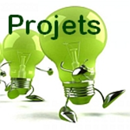

 |
GUIDE DANS LA DEMARCHE |
Le tableau ci-dessous pourra vous donner un guide du travail à réaliser, mais ne constitue aucunement une liste exhaustives des taches à réaliser
Phase |
Durée |
LOT 2 : Modification de la forme de la tête |
LOT 2 : PROGRAMMATION |
|
Phase Préliminaire |
Entre 3h et 6h maxi |
Créer un espace de travail collaboratif sur le cloud ; créer un dossier pour chaque lot. Création d’un compte « GOOGLEDOC » :
ex : ITPasquet1projet2021_1.lot2@gmail.com . Mot de passe : lyceepasquet (tout minuscule sans accent) Préparer un journal de bord : document texte à sauvegarder sur le cloud et mettre à jour à chaque séance : Prise de connaissance du cahier des charges. Prendre des notes. Prendre connaissance des lots. Se répartir le travail dans chaque lot. Prendre des notes Evaluer le travail à faire ; lister les tâches ;travail en « brainstoorming » ; l’organiser ; faire une carte mentale ; Evaluer la durée du travail à réaliser ; organiser ce travail dans le temps ; faire un diagramme de Gantt |
||
Conception préliminaire |
Entre 3 et 6h |
Lot 1 : Recherches théoriques : analyse du cahier des charges ; quelles sont les contraintes de formes ; prises de mesures ; esquisses ; réflexions sur différentes possibilités. Prise en main du logiciel permettant la modélisation. |
Lot 1 : Recherches théoriques : analyse du cahier des charges ; quelles sont les contraintes ? quel matériel ou logiciel utiliser ; comment réaliser le programme ? comment mettre à profit les exercices déjà traités en classe ? Premières ébauches de programme ; premières simulations |
|
Réunion de projet |
Environ 30 mn |
Réunion de projet permettant une mise au point à mi-parcours AVEC PRISE DE NOTES; « où en est-on ? que nous reste-t-il à faire ? comment ? est-ce que le planning est respecté» ? Faire un compte rendu de réunion (document texte à mettre sur le cloud ; on pourra utiliser un modèle de compte rendu disponible sur GoogleDoc |
||
Conception détaillée |
Entre 15 et 18h |
Lot 1 Travail sur le modèle ; mise en œuvre des solutions retenues ; réalisation du prototype. Travail d’assemblage |
Lot 2 Travail sur le modèle ; mise en œuvre des solutions retenues ; réalisation du prototype virtuel. Simulations à l’écran. Essais sur la maquette Travail d’assemblage |
|
Phase de synthèse |
3h |
Rassembler les différents essais ; vérifier la conformité par rapport au cahier des charges. Validation des essais A-t-on répondu au besoin ? Comment la solution répond-elle à un critère de développement durable ? |
||
Phase de restitution |
3h |
Préparation d’un diaporama (sommaire, réponse au besoin, travail effectué, démarche présentations des expériences, résultats…) |
||
36 heures |
||||
Créé avec HelpNDoc Personal Edition: Écrire des livres électronique Kindle